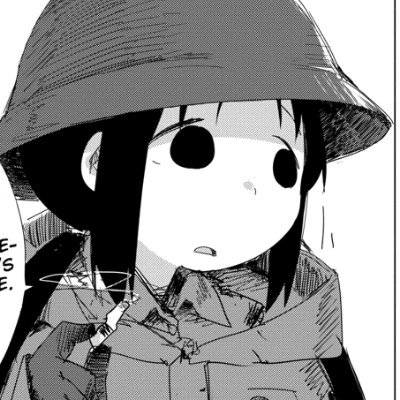
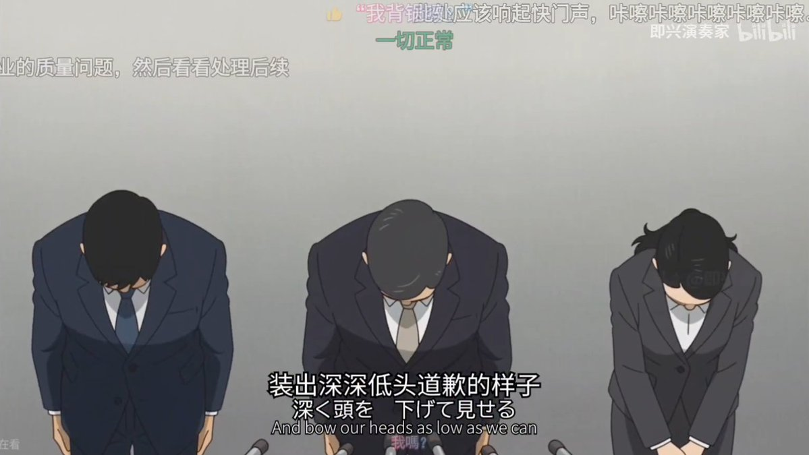
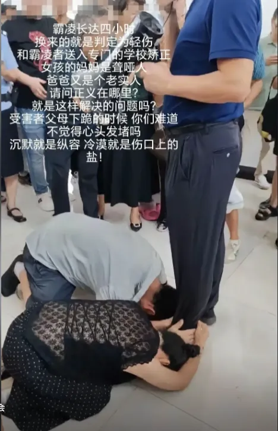
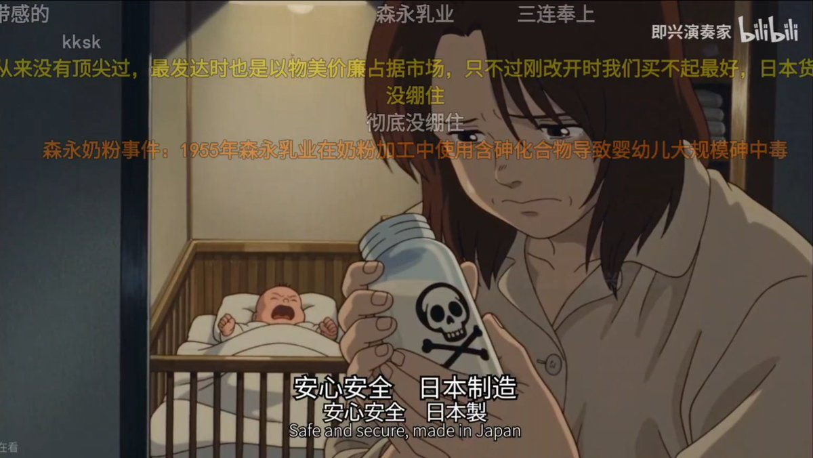
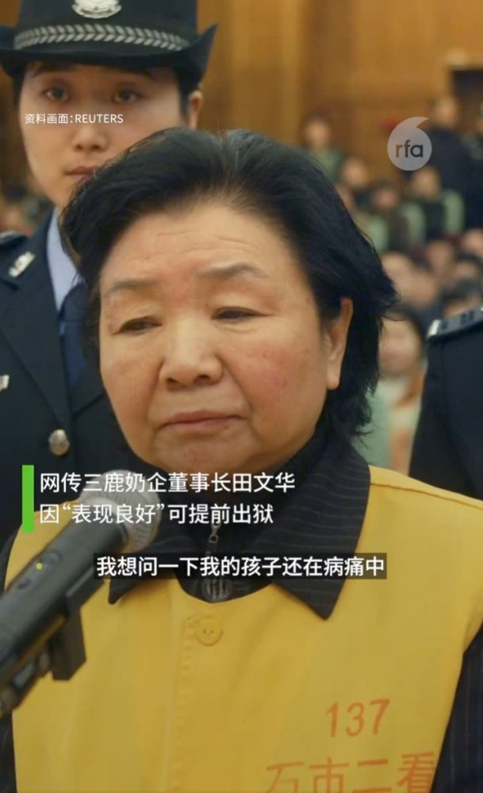

懸想/AAA需要尼古丁找我（
@blackdoginmyhed
RT @DevilsTrumpetVI: 越看越感觉像东大，搁这指桑骂槐呢是吧
温州动车事故、针头复用血祸、毒奶粉毒食品......视频里所有画面都能一一对应
最好笑的还属老中嘲讽日本人“躬匠精神”，银行爆雷，工人讨薪，还有江油事件身障父母等，上访跪地哀求都不得解决与道歉，…




Phlonika🏴🚩🌹🍉🌻
@DevilsTrumpetVI
越看越感觉像东大，搁这指桑骂槐呢是吧
温州动车事故、针头复用血祸、毒奶粉毒食品......视频里所有画面都能一一对应
最好笑的还属老中嘲讽日本人“躬匠精神”，银行爆雷，工人讨薪，还有江油事件身障父母等，上访跪地哀求都不得解决与道歉，本国眼下的现实我视若无睹，却对他国陈年旧事如数家珍这点😅 https://t.co/rzl3yWkFNt https://t.co/DyP12eYlGt